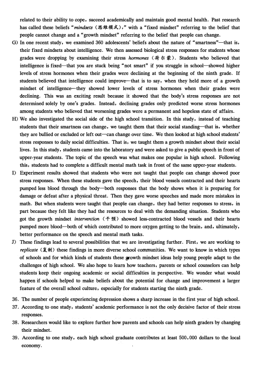
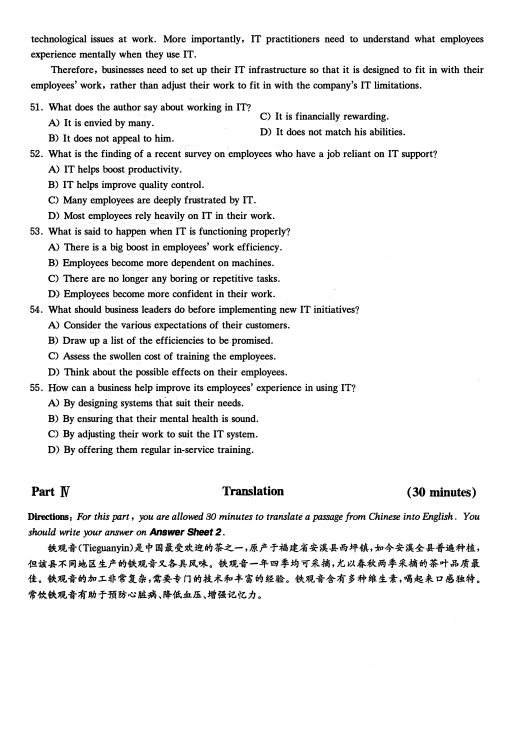

第 1 / 8 页

Part I
）＿
（
题
真
试
考
级
四
语
英
学
大
月
6
年1
2
。2
Writing
(30 minutes)
Directions: 肋r this part, you are allowed 30 minutes to write an essay titled "Are people becoming addicted
to technology?". T, 如statement given below is for your reference. You should write at least丝Q words but no
more than型words.
Numerous studies claim that addiction to technology is real and it has the same effect on the brain as drug
addiction.
Part ][
Section A
Listening Comprehension
(25 minutes)
Directions: In this section, you will hear three news reports. At the e叫of each news report , you will hear
two or three questions. Both the news report a叫the questions will be spoken only once. After you hear a
question, you must choose the best answer from the four choices marked A) , B) , C) a叫D). Then mark
the correspo叫ing letter on Answer Sheet 1 with a single line through the centre.
Questions 1 and 2 are based on the news report you have just heard.
1. A) Enrol him in a Newcastle football club.
B) Send him to an after-school art class.
C) Forbid him to draw in his workbook.
D) Help him post his drawings online.
2. A) Contacted Joe to decorate its dining-room.
B) Hired Joe to paint all the walls of its buildings.
C) Renovated its kitchen and all the dining-rooms.
D) Asked Joe for permission to use his online drawings.
Questions 3 and 4 are based on the news report you have just heard.
3. A) Get her pet dog back.
C) Identify the suspect on the secunty video.
B) Beg for help from the police.
D) Post pictures of her pet dog on social media.
4. A) It is suffering a great deal from the incident.
B) It is helping the police with the investigation.
C) It is bringing the case to the local district court.
D) It is offering a big reward to anyone who helps.
Questions 5 to 7 are based on the news report you have just heanl.
5. A) Provide free meals to the local poor.
C) Help eliminate class difference in his area.
B) Help people connect with each other.
D) Provide customers with first-class service.
6 A) It d
.
oes not supervise its employees.
C) It does not use volunteers.
B) It donates regularly to a local charity.
D) It is open round the clock.
查看 / 复制本页文字
Part I ）＿ （ 题 真 试 考 级 四 语 英 学 大 月 6 年1 2 。2 Writing (30 minutes) Directions: 肋r this part, you are allowed 30 minutes to write an essay titled "Are people becoming addicted to technology?". T, 如statement given below is for your reference. You should write at least丝Q words but no more than型words. Numerous studies claim that addiction to technology is real and it has the same effect on the brain as drug addiction. Part ][ Section A Listening Comprehension (25 minutes) Directions: In this section, you will hear three news reports. At the e叫of each news report , you will hear two or three questions. Both the news report a叫the questions will be spoken only once. After you hear a question, you must choose the best answer from the four choices marked A) , B) , C) a叫D). Then mark the correspo叫ing letter on Answer Sheet 1 with a single line through the centre. Questions 1 and 2 are based on the news report you have just heard. 1. A) Enrol him in a Newcastle football club. B) Send him to an after-school art class. C) Forbid him to draw in his workbook. D) Help him post his drawings online. 2. A) Contacted Joe to decorate its dining-room. B) Hired Joe to paint all the walls of its buildings. C) Renovated its kitchen and all the dining-rooms. D) Asked Joe for permission to use his online drawings. Questions 3 and 4 are based on the news report you have just heard. 3. A) Get her pet dog back. C) Identify the suspect on the secunty video. B) Beg for help from the police. D) Post pictures of her pet dog on social media. 4. A) It is suffering a great deal from the incident. B) It is helping the police with the investigation. C) It is bringing the case to the local district court. D) It is offering a big reward to anyone who helps. Questions 5 to 7 are based on the news report you have just heanl. 5. A) Provide free meals to the local poor. C) Help eliminate class difference in his area. B) Help people connect with each other. D) Provide customers with first-class service. 6 A) It d . oes not supervise its employees. C) It does not use volunteers. B) It donates regularly to a local charity. D) It is open round the clock.
第 2 / 8 页
7. A) They will realise the importance of communication.
B) They will come to the cafe even more frequently.
C) They will care less about their own background.
D) They will find they have something in common.
Section B
Directions: In this section, you will hear two long conversations. At the end of each conversation, you will
hear four questions. Both the conversation and the questions will be spoken only once. After you hear a
question, you must choose the best answer from the four choices marked A), B), C) and D). Then mark
the corresponding letter on Answer SȘt 1 with a single line through the centre.
Questions 8 to 11 are based on the conversation you have just heard.
8. A) A surprise party for Paul's birthday.
C) Preparations for Saturday s get-together.
B) Travel plans for the coming weekend.
D) The new market on the other side of town.
9. A) It makes the hostess's job a whole lot easier.
B) It enables guests to wallc around and chat freely.
C) It saves considerable time and labor.
D) It requires fewer tables and chairs.
10. A) It offers some big discounts.
C) It is more spacious and less crowded.
B) It is quite close to her house.
D) It sells local wines and soft drinks.
11. A) Cook a dish for the party.
C) Prepare a few opening remarks.
B) Arrive 10 minutes earlier.
D) Bring his computer and speakers.
Questions 12 to 15 are based on the conversation you have just heard.
12. A) For commuting to work.
C) For gettmg around in Miami.
or convemence at weekends.
B) For long-distance travel.
D) F
13. A) They are reliable.
C) The y are spacious.
B) They are compact.
D) They are easy to drive.
14. A) Buy a second-hand car.
C) Seek advice from his friend.
B) Trust her own judgment.
D) Look around before deciding.
15. A) He sells new cars.
C) He is starting a business.
B) He can be trusted.
D) He is a successful car dealer.
Section C
Directions: In this section , you will hear three passages. At the end of each pa,ssage, you will hear three or
four questions. Both the passage and the questions will be spoken only once. After you hear a question , you
must choose the best answer from the four choices marked A) , B) , C) and D) . Then mark the
e
corresponding letter on Answer Sheet 1 with a single line through th centre.
Questions 16 to 18 are based on the passage you have just heard.
16. A) Many escaped from farms and became wild.
B) They were actually native to North America.
C) M皿y got killed in the wild when searching for food.
D) They were hunted by Spanish and Russian explorers.
17. A) They often make sudden attacks on people.
B) They break up nature's food supply chain.
C) They cause much environmental pollution.
D) They carry a great many diseases.
查看 / 复制本页文字
7. A) They will realise the importance of communication. B) They will come to the cafe even more frequently. C) They will care less about their own background. D) They will find they have something in common. Section B Directions: In this section, you will hear two long conversations. At the end of each conversation, you will hear four questions. Both the conversation and the questions will be spoken only once. After you hear a question, you must choose the best answer from the four choices marked A), B), C) and D). Then mark the corresponding letter on Answer SȘt 1 with a single line through the centre. Questions 8 to 11 are based on the conversation you have just heard. 8. A) A surprise party for Paul's birthday. C) Preparations for Saturday s get-together. B) Travel plans for the coming weekend. D) The new market on the other side of town. 9. A) It makes the hostess's job a whole lot easier. B) It enables guests to wallc around and chat freely. C) It saves considerable time and labor. D) It requires fewer tables and chairs. 10. A) It offers some big discounts. C) It is more spacious and less crowded. B) It is quite close to her house. D) It sells local wines and soft drinks. 11. A) Cook a dish for the party. C) Prepare a few opening remarks. B) Arrive 10 minutes earlier. D) Bring his computer and speakers. Questions 12 to 15 are based on the conversation you have just heard. 12. A) For commuting to work. C) For gettmg around in Miami. or convemence at weekends. B) For long-distance travel. D) F 13. A) They are reliable. C) The y are spacious. B) They are compact. D) They are easy to drive. 14. A) Buy a second-hand car. C) Seek advice from his friend. B) Trust her own judgment. D) Look around before deciding. 15. A) He sells new cars. C) He is starting a business. B) He can be trusted. D) He is a successful car dealer. Section C Directions: In this section , you will hear three passages. At the end of each pa,ssage, you will hear three or four questions. Both the passage and the questions will be spoken only once. After you hear a question , you must choose the best answer from the four choices marked A) , B) , C) and D) . Then mark the e corresponding letter on Answer Sheet 1 with a single line through th centre. Questions 16 to 18 are based on the passage you have just heard. 16. A) Many escaped from farms and became wild. B) They were actually native to North America. C) M皿y got killed in the wild when searching for food. D) They were hunted by Spanish and Russian explorers. 17. A) They often make sudden attacks on people. B) They break up nature's food supply chain. C) They cause much environmental pollution. D) They carry a great many diseases.
第 3 / 8 页
18. A) They lived peacefully with wild pigs.
C) They fell victim to eagles.
B) They ran out of food completely.
D) They reproduced quickly.
Questions 19 to 21 are based on the p蛔哩e yon have just heanl
19. A) Taste coffee while in outer space.
C) Develop a new strain of coffee bean.
B) Roast coffee beans in outer space.
D) Use a pressurised tank to brew coffee.
20. A) They can easily get burned.
C) They have to be heated to 360°C.
B) They float around in the oven.
D) They receive evenly distributed heat.
21. A) They charged a high price for their space-roasted coffee beans.
B) They set up a branch in Dubai to manufacture coffee roasters.
C) They collaborated on building the first space coffee machine.
D) They abandoned the attempt to roast coffee beans in space.
Questions 22 to 25 are based on the pas.,age yon have just heard.
22. A) It is the best time for sightseeing.
C) They come to clean the Iditarod Trail.
B) A race passes through it annually.
D) It is when the villagers choose a queen.
23. A) Its children's baking skills.
C) Its tasty fruit pies.
B) It
.
s umque wmter scenery.
D) Its great food variety.
24. A) The contestants.
B) The entire village.
25. A) She owned a restaurant in Idaho.
B) She married her husband in 1972.
C) Jan Newton and her friends.
D) People from the state of Idaho.
C) She went to Alaska to compete in a race.
D) She helped the village toȍome famous.
Back in Belgium, the scientists looked at the ants under an electronic microscope and found that their
31
, triangular hair reflects light like a prism (棱镜），giving them a metallic reflection and protecting
them from the sun's aw血heat. When Ph.D. student Quentin Willot
32
the hair from an ant with a
33
knife and put it under a heat lamp, its temperature jumped.
Part][
Reading Comprehension
(40 minutes)
Section A
Directions: In this section, there is a passage with ten blanks. You are required to select one 叩rd for纽ch
blank from a list of choices given in a 欢)rd bank following the passage, Read the pas, 皿ge through carefully
before making your choices. 丘吐choice in the bank is identified by a letter. Please mark the corresponding
letter for each item on Answer Sheet 2 with a single line through the centre. You may not use any of the
叩rds in the bank more than once.
Most animals seek shade when temperatures in the Sahara Desert soar to 120 degrees Fahrenheit. But
for the Saharan silver ant,
26
from their underground nests into the sun's brutal rays to
27
for
food, this is the perfect time ,to seek lunch. In 2015 these ants were joined in the desert by scientists from
two Belgian universities, who spent a month in the
28
heat tracking the ants and digging out their
nests. Toe goal was simple, to discover how theȎ
2
adapted to the kind of heat that can
30
melt
the bottom of shoes.
Toe ants' method of staying cool is
34
among animals. Could this reflective type of hair protect
people? Willot says companies are interested inȏ 35
旦these ants' method of heat protection for human
use, including everything from helping to protect the lives of firefighters to keeping homes cool in
Sltmmer.
查看 / 复制本页文字
18. A) They lived peacefully with wild pigs. C) They fell victim to eagles. B) They ran out of food completely. D) They reproduced quickly. Questions 19 to 21 are based on the p蛔哩e yon have just heanl 19. A) Taste coffee while in outer space. C) Develop a new strain of coffee bean. B) Roast coffee beans in outer space. D) Use a pressurised tank to brew coffee. 20. A) They can easily get burned. C) They have to be heated to 360°C. B) They float around in the oven. D) They receive evenly distributed heat. 21. A) They charged a high price for their space-roasted coffee beans. B) They set up a branch in Dubai to manufacture coffee roasters. C) They collaborated on building the first space coffee machine. D) They abandoned the attempt to roast coffee beans in space. Questions 22 to 25 are based on the pas.,age yon have just heard. 22. A) It is the best time for sightseeing. C) They come to clean the Iditarod Trail. B) A race passes through it annually. D) It is when the villagers choose a queen. 23. A) Its children's baking skills. C) Its tasty fruit pies. B) It . s umque wmter scenery. D) Its great food variety. 24. A) The contestants. B) The entire village. 25. A) She owned a restaurant in Idaho. B) She married her husband in 1972. C) Jan Newton and her friends. D) People from the state of Idaho. C) She went to Alaska to compete in a race. D) She helped the village toȍome famous. Back in Belgium, the scientists looked at the ants under an electronic microscope and found that their 31 , triangular hair reflects light like a prism (棱镜），giving them a metallic reflection and protecting them from the sun's aw血heat. When Ph.D. student Quentin Willot 32 the hair from an ant with a 33 knife and put it under a heat lamp, its temperature jumped. Part][ Reading Comprehension (40 minutes) Section A Directions: In this section, there is a passage with ten blanks. You are required to select one 叩rd for纽ch blank from a list of choices given in a 欢)rd bank following the passage, Read the pas, 皿ge through carefully before making your choices. 丘吐choice in the bank is identified by a letter. Please mark the corresponding letter for each item on Answer Sheet 2 with a single line through the centre. You may not use any of the 叩rds in the bank more than once. Most animals seek shade when temperatures in the Sahara Desert soar to 120 degrees Fahrenheit. But for the Saharan silver ant, 26 from their underground nests into the sun's brutal rays to 27 for food, this is the perfect time ,to seek lunch. In 2015 these ants were joined in the desert by scientists from two Belgian universities, who spent a month in the 28 heat tracking the ants and digging out their nests. Toe goal was simple, to discover how theȎ 2 adapted to the kind of heat that can 30 melt the bottom of shoes. Toe ants' method of staying cool is 34 among animals. Could this reflective type of hair protect people? Willot says companies are interested inȏ 35 旦these ants' method of heat protection for human use, including everything from helping to protect the lives of firefighters to keeping homes cool in Sltmmer.
第 4 / 8 页
A) adapting
B) consciously
C) crawling
D) crowded
E) extreme
Section B
F) hunt
G) literally
H) moderate
I) remote
J) removed
K) species
L) specimens
M) thick
N) tiny
0) unique
Directions: In this section, you are going to read a passage with ten statements attached to it. 应ch
血tement contains information given in one of the paragrap加. Identify the paragraph from which the
information is derived. You may choo犯a paragraph more than once. Each paragraph is marked with a
letter. Answer the questions by marking the corresponding letter on Answer Sheet 2.
The start of high school doesn't have to be stressful
A) This month, more than 4 million students across the nation will begin high school. M皿y will do well.
But many will not. Consider that nearly two-thirds of students will experience the "ninth-grade
shock," which refers to a dramatic drop in a student's academic performance. Some students cope with
this shock by avoiding challenges. For instance, they may drop difficult coursework. Others may
experience a hopelessness that results in failing their core classes, such as English, science and math.
B) This should matter a great deal to parents, teachers and policymakers. Ultimately it should matter to
the students themselves and society at large, because students'experience of transitioning (过渡）to
the ninth grade can have long.:term consequences not only for the students themselves but for their
home communities. We m吐e these observations as research psychologists who have studied how
schools and families can help young people thrive.
C) In the new global economy, students who fail to finish the ninth grade with passing grades in college
preparatory coursework are very unlikely to graduate on time and ,go on to get jobs. One study has
calculated that the lifetime benefit to the local economy for a single additional student who completes
high school is half a m诅ion dollars or more. This is based on higher earnings and avoided costs in
health care, crime, welfare dependence and other things.
D) The consequences of doing poorly in the ninth grade can impact more than students'ability to find a
good job. It can also impact the extent to which they enjoy life. Students lose many of the friends they
turned to for support when they move from the eighth to the ninth grade. One study of ninth-grade
students found that 50 percent of friendships among ninth graders changed from one month to the
next, signaling striking instability in friendships.
E) In addition, studies find the first year of high 妃hool typically shows one of the greatest increases in
depression of any year over the lifespan. Researchers think that one explanation is that ties to friends
are broken while academic demands are rising. Furthermore, most adult cases of clinical depression
first emerge in adolescence (青春期）. The World Health Organization reports that depression has the
greatest burden of disease worldwide, in terms of the total cost of treatment and the loss of
productivity.
F) Given all that's riding on having a successful ninth grade experience, it pays to explore what: can be
done to meet the academic, social and emotional challenges of the transition to high school. So far,
our studies have yielded one main insight: Students'beliefs about change-their beliefs about whether
people are stuck one way forever, or whether people can change their personalities and abilities-are
查看 / 复制本页文字
A) adapting B) consciously C) crawling D) crowded E) extreme Section B F) hunt G) literally H) moderate I) remote J) removed K) species L) specimens M) thick N) tiny 0) unique Directions: In this section, you are going to read a passage with ten statements attached to it. 应ch 血tement contains information given in one of the paragrap加. Identify the paragraph from which the information is derived. You may choo犯a paragraph more than once. Each paragraph is marked with a letter. Answer the questions by marking the corresponding letter on Answer Sheet 2. The start of high school doesn't have to be stressful A) This month, more than 4 million students across the nation will begin high school. M皿y will do well. But many will not. Consider that nearly two-thirds of students will experience the "ninth-grade shock," which refers to a dramatic drop in a student's academic performance. Some students cope with this shock by avoiding challenges. For instance, they may drop difficult coursework. Others may experience a hopelessness that results in failing their core classes, such as English, science and math. B) This should matter a great deal to parents, teachers and policymakers. Ultimately it should matter to the students themselves and society at large, because students'experience of transitioning (过渡）to the ninth grade can have long.:term consequences not only for the students themselves but for their home communities. We m吐e these observations as research psychologists who have studied how schools and families can help young people thrive. C) In the new global economy, students who fail to finish the ninth grade with passing grades in college preparatory coursework are very unlikely to graduate on time and ,go on to get jobs. One study has calculated that the lifetime benefit to the local economy for a single additional student who completes high school is half a m诅ion dollars or more. This is based on higher earnings and avoided costs in health care, crime, welfare dependence and other things. D) The consequences of doing poorly in the ninth grade can impact more than students'ability to find a good job. It can also impact the extent to which they enjoy life. Students lose many of the friends they turned to for support when they move from the eighth to the ninth grade. One study of ninth-grade students found that 50 percent of friendships among ninth graders changed from one month to the next, signaling striking instability in friendships. E) In addition, studies find the first year of high 妃hool typically shows one of the greatest increases in depression of any year over the lifespan. Researchers think that one explanation is that ties to friends are broken while academic demands are rising. Furthermore, most adult cases of clinical depression first emerge in adolescence (青春期）. The World Health Organization reports that depression has the greatest burden of disease worldwide, in terms of the total cost of treatment and the loss of productivity. F) Given all that's riding on having a successful ninth grade experience, it pays to explore what: can be done to meet the academic, social and emotional challenges of the transition to high school. So far, our studies have yielded one main insight: Students'beliefs about change-their beliefs about whether people are stuck one way forever, or whether people can change their personalities and abilities-are
第 5 / 8 页

related to their ability to cope, succeed academically and maintain good mental health. Past research
has called these beliefs " mindsets (思维模式），" with a "fixed mindset" referring to the belief that
people cannot change and a "growth mindset" referring to the belief that people can change.
G) In one recent study, we examined 360 adolescents' beliefs about the nature of "smartness"—that is,
their fixed mindsets about intelligence. We then assessed biological stress responses for students whose
grades were dropping by examining their stress加rmones (荷尔蒙）. Students who believed that
intelligence is fixed—that you are stuck being "not smart" if you struggle in school—showed higher
levels of stress hormones when their grades were declining at the beginning of the ninth grade. If
students believed that intelligence could improve-that is to say, when they held more of a growth
mindset of intelligence-they showed lower levels of stress hormones when their grades were
declining. This was an exciting result because it showed that the body's stress responses are not
determined solely by one's grades. Instead, declining grades only predicted worse stress hormones
among students who believed that worsening grades were a permanent and hopeless state of affairs.
H) We also investigated the social side of the high school transition. In this study, instead of teaching
students that their smartness can change, we taught them that their social standing—that is, whether
they are bullied or excluded or left out一can change over time. We then looked at high school students'
stress responses to daily social difficulties. That is, we taught them a growth mindset about their social
lives. In this study, students came into the laboratory and were asked to give a public speech in front of
upper-year students. The topic of the speech was what makes one popular in high school. Following
this, students had to complete a difficult mental math task in front of the same upper-year students.
I) Experiment results showed that students who were not taught that people can change showed poor
stress responses. When these students gave the speech, their blood vessels contracted and their hearts
pumped less blood through the body-both responses that the body shows when it is preparing for
damage or defeat after a physical threat. Then they gave worse speeches and made more mistakes in
math. But when students were taught that people can change, they had better responses to stress, in
part because they felt like they had the resources to deal with the demanding situation. Students who
got the growth mindset intervention (干预）showed less-contracted blood vessels and their hearts
pumped more blood—both of which contributed to more oxygen getting to the brain, and, ultimately,
better performance on the speech and mental math tasks.
J) These findings lead to several possibilities that we are investigating further. First, we are working to
replicate (复制）these findings in more diverse school communities. We want to know in which types
of schools and for which kinds of students these growth mindset ideas help young people adapt to the
challenges of high school. We also hope to learn how teachers, parents or school counselors can help
students keep their ongoing academic or social difficulties in perspective. We wonder what would
happen if schools helped to make beliefs about the potential for change and improvement a larger
feature of the overall school culture, especially for students starting the ninth grade.
36. The number of people experiencing depression shows a sharp increase in the first year of high school.
37. According to one study, students' academic performance is not the only decisive factor of their stress
responses.
38. Researchers would like to explore further how parents and schools can help ninth graders by changing
their mindset.
39. According to one study, each high school graduate contributes at least 500, 000 dollars to the local
economy.
查看 / 复制本页文字
related to their ability to cope, succeed academically and maintain good mental health. Past research has called these beliefs " mindsets (思维模式），" with a "fixed mindset" referring to the belief that people cannot change and a "growth mindset" referring to the belief that people can change. G) In one recent study, we examined 360 adolescents' beliefs about the nature of "smartness"—that is, their fixed mindsets about intelligence. We then assessed biological stress responses for students whose grades were dropping by examining their stress加rmones (荷尔蒙）. Students who believed that intelligence is fixed—that you are stuck being "not smart" if you struggle in school—showed higher levels of stress hormones when their grades were declining at the beginning of the ninth grade. If students believed that intelligence could improve-that is to say, when they held more of a growth mindset of intelligence-they showed lower levels of stress hormones when their grades were declining. This was an exciting result because it showed that the body's stress responses are not determined solely by one's grades. Instead, declining grades only predicted worse stress hormones among students who believed that worsening grades were a permanent and hopeless state of affairs. H) We also investigated the social side of the high school transition. In this study, instead of teaching students that their smartness can change, we taught them that their social standing—that is, whether they are bullied or excluded or left out一can change over time. We then looked at high school students' stress responses to daily social difficulties. That is, we taught them a growth mindset about their social lives. In this study, students came into the laboratory and were asked to give a public speech in front of upper-year students. The topic of the speech was what makes one popular in high school. Following this, students had to complete a difficult mental math task in front of the same upper-year students. I) Experiment results showed that students who were not taught that people can change showed poor stress responses. When these students gave the speech, their blood vessels contracted and their hearts pumped less blood through the body-both responses that the body shows when it is preparing for damage or defeat after a physical threat. Then they gave worse speeches and made more mistakes in math. But when students were taught that people can change, they had better responses to stress, in part because they felt like they had the resources to deal with the demanding situation. Students who got the growth mindset intervention (干预）showed less-contracted blood vessels and their hearts pumped more blood—both of which contributed to more oxygen getting to the brain, and, ultimately, better performance on the speech and mental math tasks. J) These findings lead to several possibilities that we are investigating further. First, we are working to replicate (复制）these findings in more diverse school communities. We want to know in which types of schools and for which kinds of students these growth mindset ideas help young people adapt to the challenges of high school. We also hope to learn how teachers, parents or school counselors can help students keep their ongoing academic or social difficulties in perspective. We wonder what would happen if schools helped to make beliefs about the potential for change and improvement a larger feature of the overall school culture, especially for students starting the ninth grade. 36. The number of people experiencing depression shows a sharp increase in the first year of high school. 37. According to one study, students' academic performance is not the only decisive factor of their stress responses. 38. Researchers would like to explore further how parents and schools can help ninth graders by changing their mindset. 39. According to one study, each high school graduate contributes at least 500, 000 dollars to the local economy.
第 6 / 8 页

40. In one study, students were told their social position in school is not unchangeable.
41. It is reported that depression results in enormous economic losses worldwide.
42. One study showed that friendships among ninth graders were far from stable.
43. More than half of students will find their academic performance declining sharply when they enter the
ninth grade.
44. Researchers found through experiments that students could be taught to respond to stress in a more
positive way.
45. It is beneficial to explore ways to cope with the challenges facing students entering high school.
Section C
Directions: There are 2 passages in this section. 应ch passage is followed by some questio邓or unfinis加d
statements. For each of加mt加reare four choices m叮ked A), B), C) and D). You should decide on t加
best choice and mark t加corresponding letter on Answer Sheet 2 with a single line through t如centre.
Passage One
Questions 46 to SO are based on the following passage.
Educators and business leaders have more in common than it may seem. Teachers want to prepare
students for a successful future. Technology companies have an interest in developing a workforce with the
SIBM (science, technology, engineering and math) skills needed to grow the company and advance the
industry. How can they work together to achieve these goals? Play may be the answer.
Focusing on SIBM skills is important, but the reality is that SIBM skills are enhanced and more
relevant when combined with traditional, hands-on creative activities. This combination is proving to be
the best way to prepare today's children to be the malcers and builders of tomorrow. That is why
technology companies are partnering with educators to bring back good, old-fashioned play.
In fact many experts argue that the most important 21st-century skills aren't related to specific
technologies or subject matter, but to creativity; skills like imagination, problem-finding and problem
solving, teamwork, optimism, patience and the ability to experiment and talce risks. These are skills
acquired when kids tinker (鼓捣小玩意）. High-tech industries such as NASA's Jet Propulsion Laboratory
have found that their best overall problem solvers were master tinkerers in their youth.
There are cognitive (认知的）benefits of doing things the way we did as children—building
something, tearing it down, then building it up again. Research shows that given 15 minutes of free play,
four- and five-year-olds will spend a third of this time engaged in spatial, mathematical, and architectural
activities. This type of play—especially with building blocks一helps children discover and develop key
principles in math and geometry.
If play and b叫ding are critical to 21st-century skill development, that's really good news for two
reasons: Children are born builders, makers, and creators, so fostering (培养）21st-century skills may be
as simple as giving kids room to play, tinker and try things out, even as they grow older. Secondly, it
doesn't talce 21st-century technology to foster 21st-century skills. This is especially important for under
resourced schools and communities. Talcing whatever materials are handy and tinkering with them is a
simple way to engage those important "malcer" skills. And anyone, anywhere, can do it.
46. What does the author say about educators?
A) They seek advice from technology companies to achieve teaching goals.
B) They have been successful in preparing the workforce for companies.
查看 / 复制本页文字
40. In one study, students were told their social position in school is not unchangeable. 41. It is reported that depression results in enormous economic losses worldwide. 42. One study showed that friendships among ninth graders were far from stable. 43. More than half of students will find their academic performance declining sharply when they enter the ninth grade. 44. Researchers found through experiments that students could be taught to respond to stress in a more positive way. 45. It is beneficial to explore ways to cope with the challenges facing students entering high school. Section C Directions: There are 2 passages in this section. 应ch passage is followed by some questio邓or unfinis加d statements. For each of加mt加reare four choices m叮ked A), B), C) and D). You should decide on t加 best choice and mark t加corresponding letter on Answer Sheet 2 with a single line through t如centre. Passage One Questions 46 to SO are based on the following passage. Educators and business leaders have more in common than it may seem. Teachers want to prepare students for a successful future. Technology companies have an interest in developing a workforce with the SIBM (science, technology, engineering and math) skills needed to grow the company and advance the industry. How can they work together to achieve these goals? Play may be the answer. Focusing on SIBM skills is important, but the reality is that SIBM skills are enhanced and more relevant when combined with traditional, hands-on creative activities. This combination is proving to be the best way to prepare today's children to be the malcers and builders of tomorrow. That is why technology companies are partnering with educators to bring back good, old-fashioned play. In fact many experts argue that the most important 21st-century skills aren't related to specific technologies or subject matter, but to creativity; skills like imagination, problem-finding and problem solving, teamwork, optimism, patience and the ability to experiment and talce risks. These are skills acquired when kids tinker (鼓捣小玩意）. High-tech industries such as NASA's Jet Propulsion Laboratory have found that their best overall problem solvers were master tinkerers in their youth. There are cognitive (认知的）benefits of doing things the way we did as children—building something, tearing it down, then building it up again. Research shows that given 15 minutes of free play, four- and five-year-olds will spend a third of this time engaged in spatial, mathematical, and architectural activities. This type of play—especially with building blocks一helps children discover and develop key principles in math and geometry. If play and b叫ding are critical to 21st-century skill development, that's really good news for two reasons: Children are born builders, makers, and creators, so fostering (培养）21st-century skills may be as simple as giving kids room to play, tinker and try things out, even as they grow older. Secondly, it doesn't talce 21st-century technology to foster 21st-century skills. This is especially important for under resourced schools and communities. Talcing whatever materials are handy and tinkering with them is a simple way to engage those important "malcer" skills. And anyone, anywhere, can do it. 46. What does the author say about educators? A) They seek advice from technology companies to achieve teaching goals. B) They have been successful in preparing the workforce for companies.
第 7 / 8 页
C) They help students acquire the skills needed for their future success.
D) They partner with technology companies to enhance teaching efficiency.
47. How can educators better develop students'SIBM skills, according to the author?
A) By blending them with traditional, stimulating activities.
B) By inviting business leaders to help design curriculums..
C) By enhancing students'ability to think in a critical way.
D) By showing students the best way to learn is through play.
48. How do children acquire the skills needed for the 21st century?
A) By engaging in activities involving specific technologies.
B) By playing with things to solve problems on their own.
C) By familiarizing themselves with high-tech gadgets.
D) By mastering basic principles through teamwork.
49. What can we do to help children learn the basics of math and geometry?
A) Stimulate their interest as early as possible.
B) Spend more time playing games with them.
C) Encourage them to make things with hands.
D) Allow them to tinker freely with calculators.
50. What does the author advise disadvantaged schools and communities to do?
A) Train students to be makers to meet future market demands.
B) Develop students' creative skills with the resources available.
C) Engage students with challenging tasks to foster their creativity.
D) Work together with companies to improve their teaching facilities.
Passage Two
Questions 51 to 55 are based on the following passage.
Being an information technology, or IT, worker is not a job I envy. They are the ones who, right in
the middle of a critical meeting, are expected to instantly fix the projector that's no longer working. They
have to tolerate the bad tempers of colleagues frustrated at the number of times they've had to call the help
desk for the same issue. They are also the ones who know there are systems that are more powerful,
reliable and faster, but their employer simply will not put up the funds to buy them.
According to a recent survey, employees who have a job reliant on IT support consider IT a major
source of job dissatisfaction. Through no fault of their own, they can suddenly find their productivity
deteriorating or quality control non-existent. And there's little they can do about it.
The experience of using IT penetrates almost the entire work field. It has become a crucial part of
employees' overall work experience. When IT is operating as it should, employee self-confidence swells.
Their job satisfaction, too, can surge when well-functioning machines relieve them of dull tasks or
repetitive processes. But if there's one thing that triggers widespread employee frustration, it's an IT
transformation project gone wrong, where swollen expectations have been popped and a long list of
promised efficiencies have been reversed. This occurs when business leaders implement IT initiatives with
little consideration of how those changes will impact the end user.
Which is why managers should appreciate just how influential the IT user experience is to their
employees, and exert substantial effort in ensuring their IT team eliminates programming errors and
application crashes. Adequate and timely IT support should also be available to enable users to cope with
查看 / 复制本页文字
C) They help students acquire the skills needed for their future success. D) They partner with technology companies to enhance teaching efficiency. 47. How can educators better develop students'SIBM skills, according to the author? A) By blending them with traditional, stimulating activities. B) By inviting business leaders to help design curriculums.. C) By enhancing students'ability to think in a critical way. D) By showing students the best way to learn is through play. 48. How do children acquire the skills needed for the 21st century? A) By engaging in activities involving specific technologies. B) By playing with things to solve problems on their own. C) By familiarizing themselves with high-tech gadgets. D) By mastering basic principles through teamwork. 49. What can we do to help children learn the basics of math and geometry? A) Stimulate their interest as early as possible. B) Spend more time playing games with them. C) Encourage them to make things with hands. D) Allow them to tinker freely with calculators. 50. What does the author advise disadvantaged schools and communities to do? A) Train students to be makers to meet future market demands. B) Develop students' creative skills with the resources available. C) Engage students with challenging tasks to foster their creativity. D) Work together with companies to improve their teaching facilities. Passage Two Questions 51 to 55 are based on the following passage. Being an information technology, or IT, worker is not a job I envy. They are the ones who, right in the middle of a critical meeting, are expected to instantly fix the projector that's no longer working. They have to tolerate the bad tempers of colleagues frustrated at the number of times they've had to call the help desk for the same issue. They are also the ones who know there are systems that are more powerful, reliable and faster, but their employer simply will not put up the funds to buy them. According to a recent survey, employees who have a job reliant on IT support consider IT a major source of job dissatisfaction. Through no fault of their own, they can suddenly find their productivity deteriorating or quality control non-existent. And there's little they can do about it. The experience of using IT penetrates almost the entire work field. It has become a crucial part of employees' overall work experience. When IT is operating as it should, employee self-confidence swells. Their job satisfaction, too, can surge when well-functioning machines relieve them of dull tasks or repetitive processes. But if there's one thing that triggers widespread employee frustration, it's an IT transformation project gone wrong, where swollen expectations have been popped and a long list of promised efficiencies have been reversed. This occurs when business leaders implement IT initiatives with little consideration of how those changes will impact the end user. Which is why managers should appreciate just how influential the IT user experience is to their employees, and exert substantial effort in ensuring their IT team eliminates programming errors and application crashes. Adequate and timely IT support should also be available to enable users to cope with
第 8 / 8 页

technological issues at work. More importantly, IT practitioners need to understand what employees
experience mentally when they use IT.
Therefore, businesses need to set up their IT infrastructure so that it is designed to fit in with their
employees'work, rather than adjust their work to fit in with the company's IT limitations.
51. What does the author say about working in IT?
A) It is envied by many.
C) It is financially rewarding.
B) It does not appeal to him.
D) It does not match his abilities.
52. What is the finding of a recent survey on employees who have a job reliant on IT support?
A) IT helps boost productivity.
B) IT helps improve quality control.
C) Many employees are deeply frustrated by IT.
D) Most employees rely heavily on IT in their work.
53. What is said to happen when IT is functioning properly?
A) There is a big boost in employees'work efficiency.
B) Employees become more dependent on machines.
C) There are no longer any boring or repetitive tasks.
D) Employees become more confident in their work.
54. What should business leaders do before implementing new IT initiatives?
A) Consider the various expectations of their customers.
B) Draw up a list of the efficiencies to be promised.
C) Assess the swollen cost of training the employees.
D) Think about the possible effects on their employees.
55. How can a business help improve its employees' experience in using IT?
A) By designing systems that suit their needs.
B) By ensuring that their mental health is sound.
C) By adjusting their work to suit the IT system.
D) By offering them regular in-service training.
Part N
Translation
(30 minutes)
Directions: For this part , you are allowed 30 minutes to translate a passage from Chinese into English. You
should write your answer on Answer Sheet 2.
铁观音(Tieguanyin)是中国最受欢迎的茶之一，原产于福建省安溪县西坪镇，如今安溪全县普遍种植，
但该县不同地区生产的铁观音又各具风味。铁观音一年四季均可采摘，尤以春秋两季采摘的茶叶品质最
佳。铁观音的加工非常复杂，需要专门的技术和丰富的经验。铁观音含有多种维生素，喝起来口感独特。
常饮铁观音有助于预防心脏病、降低血压、增强记忆力。
查看 / 复制本页文字
technological issues at work. More importantly, IT practitioners need to understand what employees experience mentally when they use IT. Therefore, businesses need to set up their IT infrastructure so that it is designed to fit in with their employees'work, rather than adjust their work to fit in with the company's IT limitations. 51. What does the author say about working in IT? A) It is envied by many. C) It is financially rewarding. B) It does not appeal to him. D) It does not match his abilities. 52. What is the finding of a recent survey on employees who have a job reliant on IT support? A) IT helps boost productivity. B) IT helps improve quality control. C) Many employees are deeply frustrated by IT. D) Most employees rely heavily on IT in their work. 53. What is said to happen when IT is functioning properly? A) There is a big boost in employees'work efficiency. B) Employees become more dependent on machines. C) There are no longer any boring or repetitive tasks. D) Employees become more confident in their work. 54. What should business leaders do before implementing new IT initiatives? A) Consider the various expectations of their customers. B) Draw up a list of the efficiencies to be promised. C) Assess the swollen cost of training the employees. D) Think about the possible effects on their employees. 55. How can a business help improve its employees' experience in using IT? A) By designing systems that suit their needs. B) By ensuring that their mental health is sound. C) By adjusting their work to suit the IT system. D) By offering them regular in-service training. Part N Translation (30 minutes) Directions: For this part , you are allowed 30 minutes to translate a passage from Chinese into English. You should write your answer on Answer Sheet 2. 铁观音(Tieguanyin)是中国最受欢迎的茶之一，原产于福建省安溪县西坪镇，如今安溪全县普遍种植， 但该县不同地区生产的铁观音又各具风味。铁观音一年四季均可采摘，尤以春秋两季采摘的茶叶品质最 佳。铁观音的加工非常复杂，需要专门的技术和丰富的经验。铁观音含有多种维生素，喝起来口感独特。 常饮铁观音有助于预防心脏病、降低血压、增强记忆力。